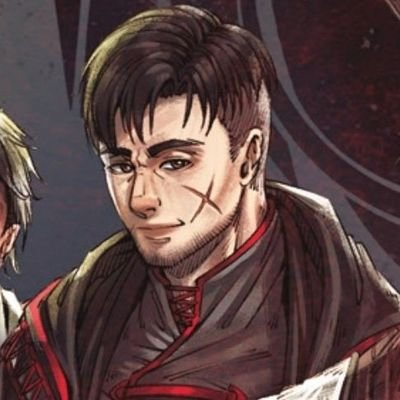
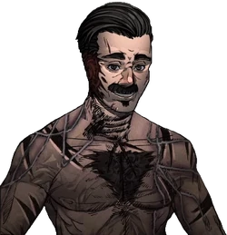
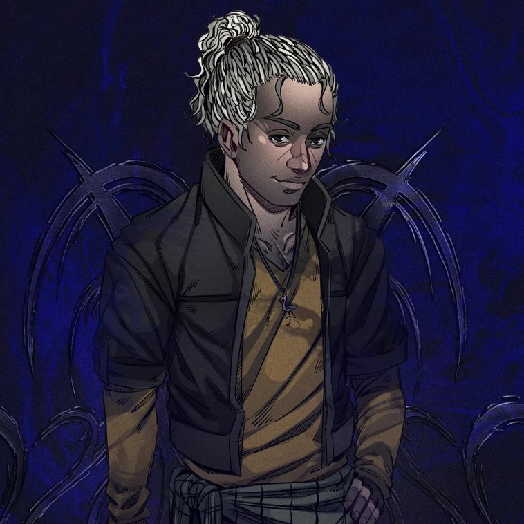

Arthur Cervero
Arthur Cervero é um dos protagonistas da série Ordem Paranormal, presente em O Segredo na Floresta, Desconjuração, Calamidade, O Segredo na Ilha e Hexatombe. Um gaudério abutre e um líder.
Arthur Cervero é um dos protagonistas da série Ordem Paranormal, presente em O Segredo na Floresta, Desconjuração, Calamidade, O Segredo na Ilha e Hexatombe. Um gaudério abutre e um líder.

Dante, cujo nome original é Gaspar, é um dos protagonistas da série Ordem Paranormal, presente em Desconjuração, Calamidade, Sinais do Outro Lado e Hexatombe. Ele é um ocultista de Morte.

Carina Leone é uma das protagonistas da série Ordem Paranormal, presente em Calamidade. Ela é uma italiana formada em moda, pertencente a uma família de justiceiros clandestinos que lutam contra o Paranormal.

Joui Jouki foi um dos protagonistas da série Ordem Paranormal, presente em O Segredo na Floresta, Desconjuração e Calamidade. Um guerreiro que honrou sua promessa até a morte.

Antônio "Balu" Pontevedra é um dos protagonistas da série Ordem Paranormal, presente em Calamidade. Ele é um ex-agente aposentado da Ordo Realitas, um veterano descontraído e forte.

Rubens Naluti. Protagonista. Ordem Paranormal, Desconjuração e Calamidade. Agente, Ordo Realitas. Parceiro Johnny Tabasco. Matar Anfitrião.